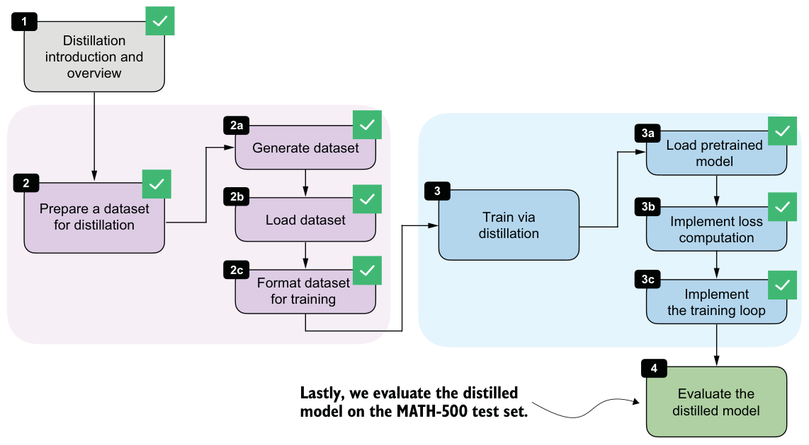
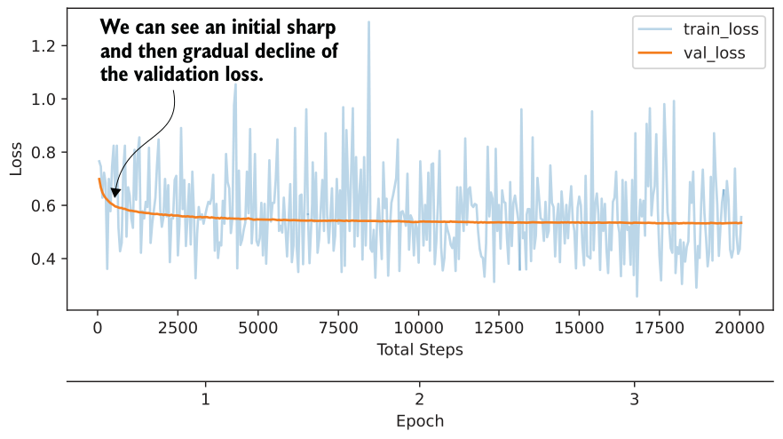

8.8Evaluating the distilled model
Now that we’ve implemented the training loop, the final stage is evaluating the distilled model, as shown in figure 8.16.

Instead of running the full distillation process inside the notebook, you can download a convenience script from the chapter’s supplementary materials. As in the previous chapter on RLVR, it is often convenient to keep the notebook focused on the core ideas and move the longer-running training job into a standalone script:
from reasoning_from_scratch.ch07 import download_from_github
download_from_github(
"ch08/04_train_with_distillation/distill.py"
)After downloading the script with the preceding code, you can run it as follows in a code terminal (if you are not a uv user, replace uv run with python):
uv run distill.py \
--data_path deepseek-r1-math-train.json \
--validation_size 25 \
--epochs 3 \
--lr 1e-5 \
--max_seq_len 2048 \
--use_think_tokens \
--grad_clip 1.0Using these settings, the full training run takes about 3 hours and 5 minutes on a DGX Spark and uses roughly 15.02 GB of GPU memory. (This is relatively modest compared with the earlier RLVR runs because most of the expensive work has already been moved into the one-time teacher data generation step.) If you do not want to run the training yourself, you can download the resulting metrics file and inspect it directly:
download_from_github(
"ch08/03_logs/deepseek-r1-2048_distill_metrics.csv"
)The following listing implements a utility function to visualize the training metrics stored in the CSV file.
import csv
import matplotlib.pyplot as pltdef plot_distill_metrics(csv_path="train_distill_metrics.csv"):
total_steps, train_losses, val_losses, epoch_bounds = [], [], [], {} with open(csv_path, newline="", encoding="utf-8") as f:
for row in csv.DictReader(f):
step = int(row["total_steps"])
epoch = int(row["epoch"]) total_steps.append(step)
train_losses.append(float(row["train_loss"]))
val_losses.append(float(row["val_loss"]))
epoch_bounds.setdefault(epoch, [step, step])[1] = step
fig, ax = plt.subplots(figsize=(7, 4))
ax.plot(total_steps, train_losses, label="train_loss", alpha=0.3)
ax.plot(total_steps, val_losses, label="val_loss")
ax.set_xlabel("Total Steps")
ax.set_ylabel("Loss")
ax.legend()
epoch_axis = ax.secondary_xaxis("bottom")
epoch_axis.spines["bottom"].set_position(("outward", 45))
epochs = sorted(epoch_bounds)
epoch_axis.set_xticks(
[
(epoch_bounds[epoch][0] + epoch_bounds[epoch][1]) / 2
for epoch in epochs
]
)
epoch_axis.set_xticklabels(epochs)
epoch_axis.set_xlabel("Epoch")
plt.tight_layout()
plt.show()
plot_distill_metrics("deepseek-r1-2048_distill_metrics.csv")The resulting plot is shown in figure 8.17.

The training-loss curve and validation-loss curve shown in figure 8.17 should be interpreted slightly differently. The training loss is computed for each training example during training at the current step, whereas the validation loss is computed on a small, fixed, held-out set. The validation curve is therefore less noisy and is the more informative signal here. We could also compute the training loss on a subset of examples, similar to the validation loss, but this would slow down training. The training loss is much less important than the validation loss for estimating training progress.
As we would hope, the validation loss drops sharply at first and then begins to flatten out, indicating that the model is learning from the distillation data but that additional training yields diminishing returns. We could experiment with a larger learning rate or a different schedule to train more aggressively, but overall the curve looks healthy.
Just as in chapter 7, we can evaluate saved checkpoints with the verifier-based utilities from chapter 3. The following command downloads the evaluation script from the supplementary materials:
download_from_github(
"ch03/02_math500-verifier-scripts/evaluate_math500.py"
)Evaluate the distilled checkpoint on MATH-500 using the reasoning tokenizer in a code terminal, as follows:
uv run evaluate_math500.py \
--dataset_size 500 \
--which_model reasoning \
--max_new_tokens 4096 \
--checkpoint_path \
"run_11/checkpoints/distill/qwen3-0.6B-distill-step06682-epoch1.pth"For the later checkpoints from the same DeepSeek-R1 run, replace ...step06682
-epoch1.pth with ...step13364-epoch2.pth, ...step20046-epoch3.pth, and so on.The evaluation results for the DeepSeek-R1 run used in this chapter are summarized in table 8.1. For reference, I’ve also included a second run trained on Qwen3 235B-A22B teacher outputs (a 235-billion-parameter Qwen3 model).
| Method | Epoch | Final validation loss | MATH-500 accuracy | |
|---|---|---|---|---|
| 1 | Base Qwen3 0.6B (chapter 3) | - | - | 15.2% |
| 2 | Reasoning Qwen3 0.6B (chapter 3) | - | - | 48.2% |
| 3 | DeepSeek-R1 | 0.5436 | 30.6% | |
| 4 | DeepSeek-R1 | 0.5349 | 32.4% | |
| 5 | DeepSeek-R1 | 0.5343 | 33.6% | |
| 6 | Qwen3 235B-A22B | 1 | 0.4043 | 45.0% |
| 7 | Qwen3 235B-A22B | 2 | 0.3963 | 43.8% |
| 8 | Qwen3 235B-A22B | 3 | 0.3948 | 44.2% |
Based on the results for the DeepSeek-R1 run shown in table 8.1, the MATH-500 accuracy improves from 30.6% after the first epoch to 33.6% after the third epoch, while the validation loss decreases from 0.5436 to 0.5343. This matches the earlier learning curve in figure 8.17, where the student clearly learns from the teacher-generated reasoning traces, but the gains begin to taper off after the initial improvement.
The Qwen3 235B-A22B run performs noticeably better in this setup. One likely reason is that the teacher and student come from the same model family, which means that the tokenizer, prompting conventions, and overall response style are more closely aligned. This can make the teacher targets easier for the smaller Qwen3 student to imitate.
Considering the MATH-500 accuracy of 45% (row 6), our distillation recipe reaches nearly the same performance as the reasoning reference model (48.2%, row 2), which is itself a distilled model but was trained on a much larger dataset generated by Qwen3 235B-A22B. This is the main tradeoff of distillation.